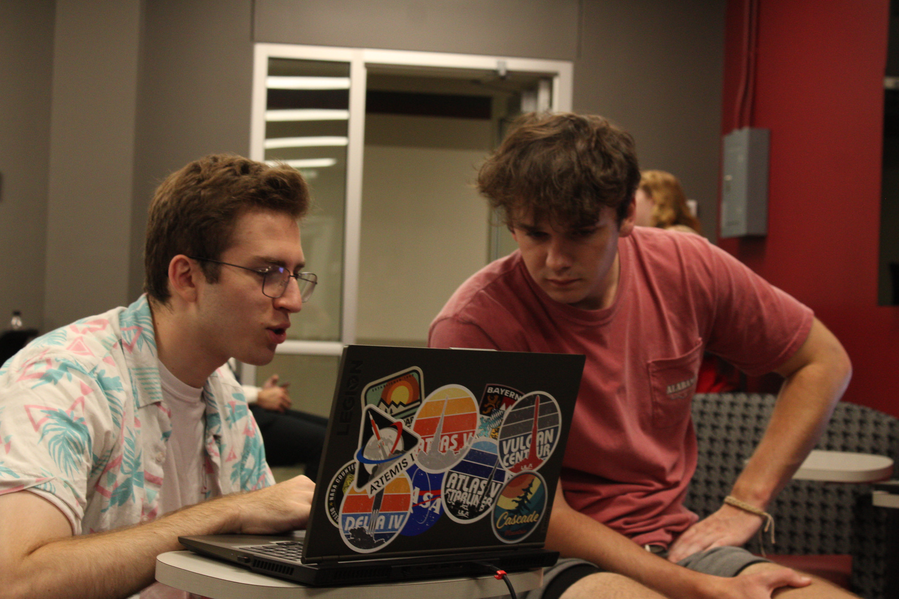

Project Crimson aims to teach real world cyber security techniques in a one on one form. Project Crimson is student led, where all of our mentors are cyber security students at The University of Alabama.
Mentors host workshops where they give immediate help to any student that comes in during this time on a wide variety of topics relating to cyber security, we recommend attending this program if you want immediate help with cyber security topics or want a more in depth learning on different programs and technologies!
Mentors are also taught soft skills through the means of smaller leadership workshops held at the end of each and every meeting these topics can include, teamwork, goal setting, communication workshops, and lesson organization workshops.
Meetings are held in the Cyber Lab (Bevill 1066) from 6 to 7pm on Thursday evenings!
We believe here at Project Crimson that one on one tutelage is the best method to take your cyber security knowledge to the next level. All you need to bring is your laptop and an open mind!
Our mentors are trained to teach a variety of topics, almost anything you can think of! If you're curious about cyber security, stop by, our mentors will be glad to help.
If you are interested in mentoring, feel free to contact our Project Crimson Directors to start your mentorship experience and open up new opportunities to learn and teach cyber security skills to peers.
Major/Minor: Cyber Security major / Cyber Crime Minor
Hometown: N/A
About me: Major Crimson Tide Fan, runs club facet, Top 4 of all time best ever Project Crimson Director, I don't exist sometimes.
Major/Minor: Computer Science major, Math minor
Hometown: Edwardsville, Illinois
About me: I am a big St. Louis sports fan, and I love cooking.
Major/Minor: Computer Science major
Hometown: Mount Prospect, Illinois
About me: Crimson Defense Competition Team Captain
Major/Minor: Cyber Security/Computer Science
Hometown: Tuscaloosa, Alabama
About me: Avid CSGO player, Web App Enjoyer, and big PC guy.
Major/Minor: Cyber Security major Cyber Crime Minor
Hometown: Millbrook, Alabama
About me: Social Media Manager of Crimson Defense Cyber Security Club, reader, Programmer (by name), whimsical (by occupation).
Major/Minor: Computer Science / Cyber Criminology
Hometown: Millbrook, Alabama
About me: Favorite color is red, shark enthusiast, in my free time i stalk people, #secondMacuserinofficergroup, I love cherries!!
Major/Minor:
Hometown:
About me:
Major/Minor: Computer Science
Hometown: Augusta, Georgia
About me: Sultai Guy, PokeMMO fan, avid video game player, C++ enjoyer, favorite anime is Soul Eater, Terraria mod dabbler, Roblox hacker man.
Major/Minor: MIS & Business Cyber Security
Hometown: Conyers, Georgia
About me: Chief of Staff for Crimson Defense, Caniac, avid Buccee's enjoyer, rescue diver, 4th degree black belt. Sec+ and Net+ certified, and an Eagle Scout.
Major/Minor: Computer Science / Math & German
Hometown: The Void Between the Waking and Sleeping Worlds
About me: 𓂀
Major/Minor: Cyber Security major
Hometown: Honolulu, Hawaii
About me: I'm an Eagle scout, a twin, love reading & nature.
Major/Minor: Cyber Security and Computer Engineering major
Hometown: Jonesboro, Arkansas
About me: I exist? 😂 I am also a lover of doctor who and a lot of Sci-Fi and Fantasy, I love participating in CTFs.